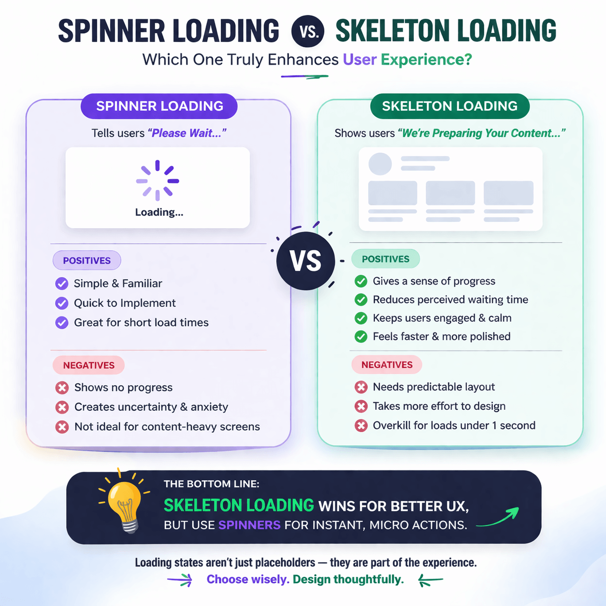
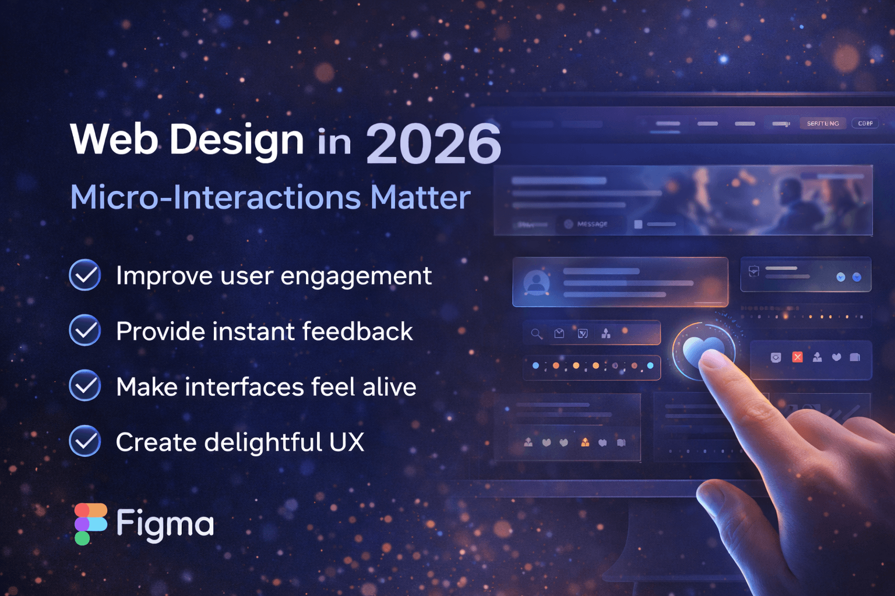
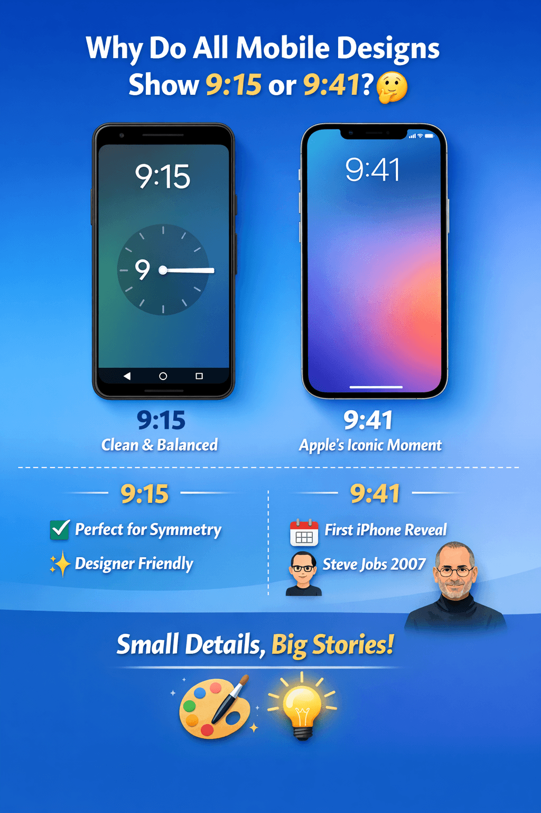

Why Skeleton Screens Improve UX More Than Spinners
Learn why skeleton loading screens reduce user anxiety and create a smoother user experience.
Welcome to the blog section of Aritra Roy, where I share insights on UI/UX design, user experience strategies, mobile UI patterns, and real-world design thinking.

Learn why skeleton loading screens reduce user anxiety and create a smoother user experience.

Understand how micro-interactions can elevate your UI design and make products feel alive.

Have you noticed that almost every mobile UI mockup shows the time as 9:15 or 9:41? There’s an interesting reason behind it.
A design choice influenced by early devices and mental models — shaping how we interact with modern digital interfaces. it.
That's why, I understand that building a website is not just about creating a pretty design or adding fancy features. The goal is to help you build your business by providing creative, flexible UX design that align with your business needs.